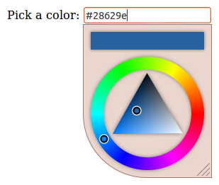
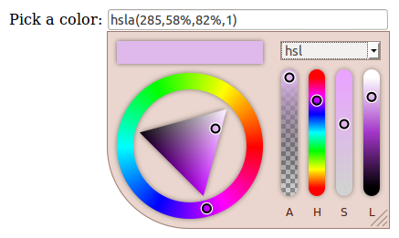
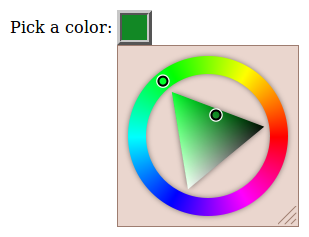

Basic color picker usage, all default options.
'; $html .= '

'; $html .= 'Output: RGBA string
Alpha selection: true
Resizable: false
Width: 130px
'; $html .= '

Static mode
Color preview in input element
'; $html .= '

Output: HSLA string
Alpha selection: true
Side panel: true
'; $html .= '

'; $html .= 'Preview in INPUT element
Width: 260px
Resizable: false
Side panel: true
Side panel mode: CMYK only
'; $html .= '

Dark theme
Resizable: false
Width: 130px
'; $html .= '

Preview in INPUT element
Custom INPUT element styling
Square corners
'; $html .= '

'; $html .= 'Sample integration with jQuery-mobile dialog.
'; $html .= '

Sample integration with jQuery UI dialog.
'; $html .= '